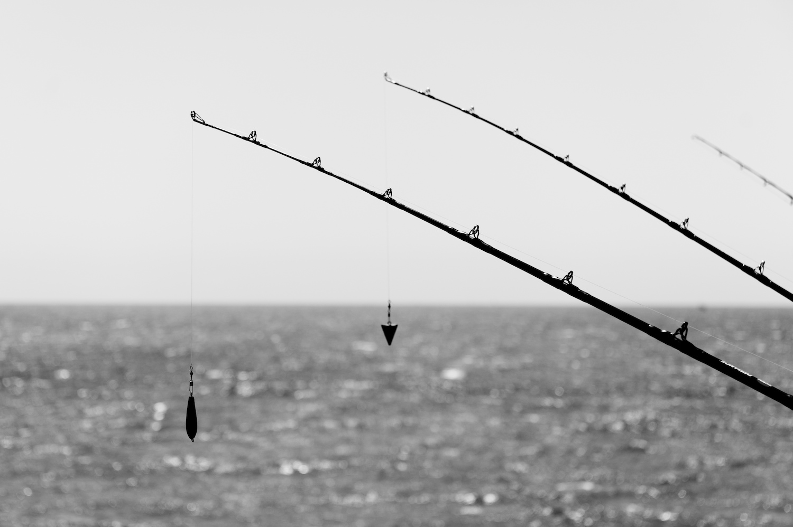
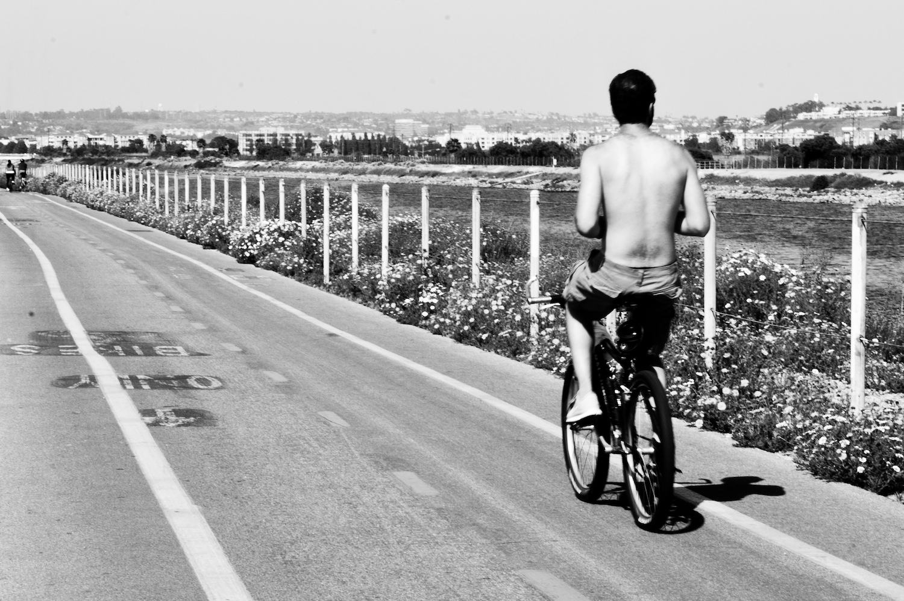

Los Angeles is my current locale and it is lingustics that brought me here, but outside of UCLA there are some nice things I try to do every once a while.
watch movies
Check out American Cinematique: Aero and Egyptian, and also Cinefamily. Their screenings are typically very nice and they often invite actors and directors to film fests and retrospectives.
plant trees
TreePeople is a nonprofit that does a great job of inspiring and educating. They care for trees throughout the city and also help restore areas damaged by forest fires. Volunteers are always needed. By the way, Los Angeles is famous for its palm-lined streets. I was fascinated at first and then learned that palms are basically useless as they don't provide any of the much needed shade. Tree people are promoting other sorts of trees that can survive the climate just as well but would be more benefical for the city.
hike trails
The nature is very diverse here, and there are plenty of dayhike and backpacking destinations within one to five hours (except that most typically you have to drive to get practically anywhere): desert, canyons, waterfalls, hot springs, tide pools, hills and mountains. I like many things but my favourite altitude is that of High Sierra, best of all in Yosemite. Here are webcams from various locations in the park.
ride bikes
Southern California allows to cycle all year round yet Los Angeles is far from ideal. My daily commute is six miles one way, which is quite enjoyable though I would certainly prefer to have actual bike paths instead of dealing with traffic. The more we bike, the more people pay attention to it and the better it gets, eventually. That's exactly the idea behind community rides, with their motto "Ride daily, celebrate monthly". The world-famous Critical Mass takes place all over the globe each month, here it is last Fridays (and first Fridays for Santa Monica). There is also Cyclavia twice per year, unique to Los Angeles.
On a separate but nonetheless related note: Bikerowave, a voluneteer run bike shop. They have equipment for maintaining a bike and willingly teach you how to actually do it.
